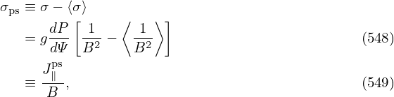
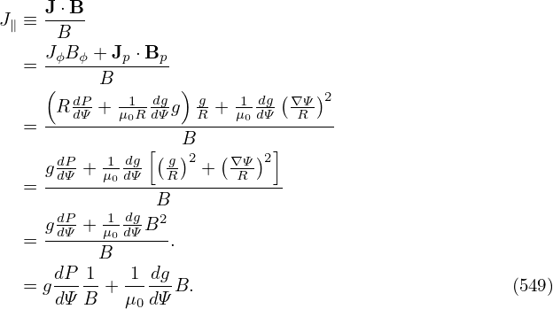

A.8 Relation of plasma current density to pressure gradient
Due to the force balance condition, the plasma current is related to the plasma pressure. Using the
equilibrium constraint in the R direction, the toroidal current density Jϕ given by Eq. (54) can be
written as
The parallel (to the magnetic field) current density is written as For later use, define Equation (547) is used in GTAW code to calculate J∥∕B (actually calculated is μ0J∥∕B)[15]. Note
that the expression for J∥∕B in Eq. (547) is not a magnetic surface function. Define σps as

where J∥ps is called Pfirsch-Schluter (PS) current. In cylindrical geometry, due to the poloidal
symmetry, the Pfiersch-Schluter current is zero. In toroidal geometry, due to the poloidal
asymmetry, the PS current is generally nonzero. Thus, this quantity characterizes a toroidal
effect.
Another useful quantity is μ0⟨J ⋅ B⟩, which is written as

where ⟨…⟩ is flux surface averaging operator.

![J-⋅B-
J∥ ≡ B
JϕB-ϕ +-Jp ⋅Bp
= B
( dP -1-dg ) g- 1-dg(∇-Ψ)2
= -R-dΨ +-μ0R-dΨg--R-+-μ0dΨ--R---
[ B ]
gdP + 1-dg (g-)2 + (∇Ψ-)2
= -dΨ---μ0dΨ---R------R----
dP 1 dg B2
gdΨ-+-μ0dΨB--
= B .
dP-1- -1-dg-
= gdΨ B + μ0 dΨB. (546)](tokamak_equilibrium690x.png)